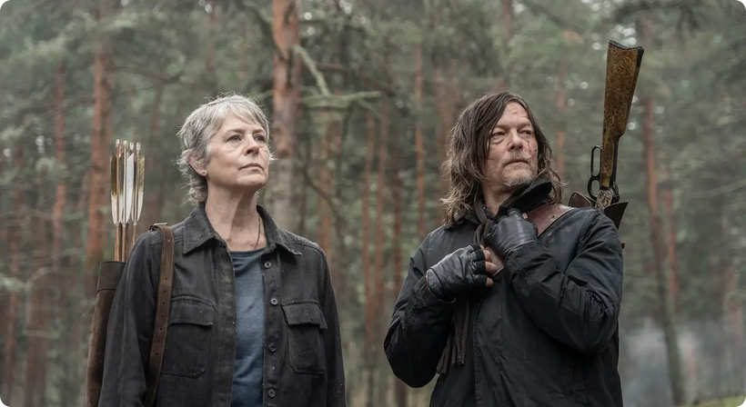

AMC在今年纽约漫展上确认了《行尸走肉：达里尔·迪克森》第四季，也就是最终季，将于2027年2月正式在AMC和AMC+播出。虽然是最终季，但不等于角色会彻底消失，官方不排除达里尔、卡罗尔未来在其它行尸宇宙作品里再登场的可能性。

今天，就让咱们来盘一盘，这趟西班牙末日之旅，到底藏着多少催泪弹和惊喜？
承接第三季结尾：达里尔与卡罗尔好不容易找到可以返回美国的船只，结果船只被毁，回家的希望破灭，二人被迫穿行满目疮痍的西班牙荒野，在末日里彼此依靠，继续寻找回家之路，未来充满巨大的不确定性。
西班牙废土大冒险：这画风怎么越来越像《权游》？
前三季在法国，第四季直接把地图切到了西班牙！
从预告片里看，西班牙的景色简直绝了，荒凉、破败，那种末日特有的苍凉美感，真的让人欲罢不能。Walkers（行尸）在西班牙街头肆虐的画面，压迫感直接拉满。
神秘人物加入，一句台词引爆全网泪点
这一季最大的看点之一，是吉米·斯密茨（Jimmy Smits）的加入。他饰演亚历杭德罗·珀金斯上尉（Captain Alejandro Perkins）。一位前美国海军军官兼医生，在末日里找到了自己独特的生存之道。
预告片里最后那个镜头，不知道看哭了多少人：遍体鳞伤的弩哥站在他面前，珀金斯眼神复杂，轻声说了一句：“Welcome home, son”（欢迎回家，孩子）。
就这一句台词，直接让无数老粉泪目！
要知道，弩哥这一路走来，失去了太多人。从哥哥莫尔，到贝丝，再到后来的各种战友，他一直在失去，一直在流浪。在西班牙这片荒凉的土地上，居然有人对他说“欢迎回家”？这究竟是救赎，还是另一场残酷的骗局？只能等正片揭晓了。
粉丝最关心的：瑞克会回来吗？
说到最终季，怎么可能不提那个男人？瑞克·格莱姆斯！
有粉丝认为瑞克·格莱姆斯（Rick Grimes）应该在最终季回归。理由很简单：达里尔当初离开美国，本来就是为了找瑞克。如果第四季能让达里尔回到美国、和瑞克重逢，那才是真正的圆满收尾。不仅完成了达里尔最初的任务，也为期待已久的《行尸走肉》重聚项目铺好了路。
目前这只是粉丝的猜测，不是 AMC 官宣，也没有任何瑞克已确认回归的实锤证据。
从 2010 年《行尸走肉》开播算起，诺曼·瑞杜斯饰演的达里尔已经陪观众走过了十几年。一个角色能撑起一部独立衍生剧，还一路走到第四季的终点，本身就说明了他在这个剧里的分量。第四季原本计划在2026年晚些时候上线，结果被推迟到2027年。延期虽然让人难受，但换个角度想：多等一年，或许是为了让这八集配得上"告别"这两个字。